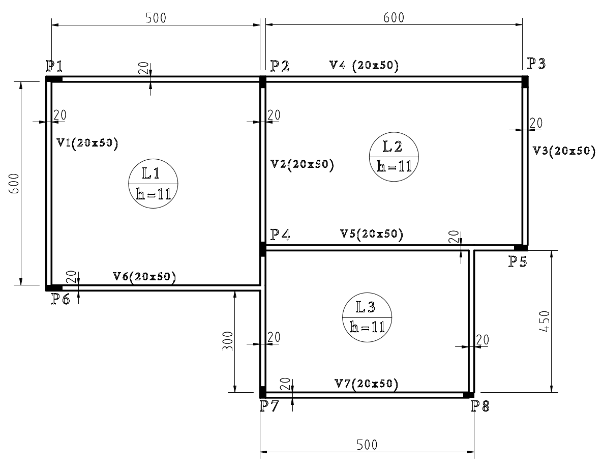

Dimensionamento e detalhamento de lajes
Neste tópico será apresentado um exemplo completo de dimensionamento e detalhamento
Exemplo
Dada a planta de formas de pavimento tipo de edificação mostrada na figura, dimensione e detalhe as lajes L1 e L2. Dados: Concreto C25; Aço CA-50; Diâmetro máximo característico do agregado = 19 mm; Classe de agressividade ambiental I. Tipo da edificação: Comercial de Call Center, com pé-direito efetivo de 310 cm. Revestimento de piso de edifícios comerciais de 7 cm de espessura. Revestimento de teto em Argamassa de cal, cimento e areia de 3 cm. Todas as vigas suportam parede de bloco de concreto vazado de espessura nominal de 19 cm e revestimento de 2 cm.

Planta de formas do exemplo
Solução
Dados de carregamento
Conforme os dados da NBR 6120, os seguintes valores são obtidos:
Tipo da edificação: Comercial de Call Center: \(F_{q} = 3 kN/m^2\)
Revestimento de piso de edifícios comerciais de 7 cm de espessura: \( F_{g,piso} =1{,}4 kN/m^2\)
Revestimento de teto em Argamassa de cal, cimento e areia de 3 cm: \(F_{g,rev} = 19 kN/m^3 \cdot 0{,}03 = 0{,}57 kN/m^2 \)
Pesos próprio: \(F_{g,pp} = 25 \cdot 0{,}11 = 2{,}75 kN/m^2 \)
Combinação de ações no Estado Limite Último
\[F_k = 3 + 1{,}4 + 0{,}57 + 2{,}75 = 7{,}72 kN/m^2 \] \[F_d = 1{,}4 F_k = 1{,}4 \cdot 7{,}72 = 10{,}81 kN/m^2 \]Laje L1
\[l_x =512 \text{ cm} \] \[l_y =612 \text{ cm} \]Laje tipo 2B
\[ \lambda = l_y/l_x = 612/512 =1{,}20 \] \[\mu_x = 4{,}38 \] \[\mu_x' = 9{,}80 \] \[\mu_y = 2{,}52 \]A classe de agressividade ambiental I exige um cobrimento nominal de 20 mm. Considerando uma barra de 10 mm de diâmetro (hipotético) tem-se:
\[ d' = 2 + 0{,}5 = 2{,}5 \text{ cm} \] \[ d = 11 - 2{,}5 = 8{,}5 \text{ cm} \]Cálculo dos momentos fletores
\[M_d = \mu \frac{F_d \cdot l_x^2 }{100}\] \[M_{d,x} = 4{,}38 \frac{ 10{,}81 \cdot 5{,}12^2}{100} = 12{,}41 \text{ } kNm/m = 1.241 \text{ } kNcm/m \] \[M_{d,x'} = 9{,}80 \frac{ 10{,}81 \cdot 5{,}12^2}{100} = 27{,}77 \text{ } kNm/m = 2.777 \text{ } kNcm/m \] \[M_{d,y} = 2{,}52 \frac{ 10{,}81 \cdot 5{,}12^2}{100} = 7{,}14 \text{ } kNm/m = 714 \text{ } kNcm/m \]Cálculo das armaduras da laje L1
\[K_c = \frac{b_w d^2}{M_d} \] \[ K_{c,x} = 100 \cdot 8{,}5^2/1.241 = 5{,}82 \text{ cm²/kN} \] \[ K_{c,x'} = 100 \cdot 8{,}5^2/2.777 = 2{,}60 \text{ cm²/kN} \] \[ K_{c,y} = 100 \cdot 8{,}5^2/714 = 10{,}11 \text{ cm²/kN} \]\[K_{s,x} =0{,}024 \]
\[K_{s,x'} =0{,}027 \]
\[K_{s,y} =0{,}024 \]
Importante observar o limite \(\beta_x \le 0{,}45\)
\[A_s = K_s \frac{M_d}{d}\]
\[A_{s,x} = 0{,}024 \frac{1241}{8{,}5} = 3{,}5 \text{ cm²/m} \]
\[A_{s,x'} = 0{,}027 \frac{2777}{8{,}5} = 8{,}82 \text{ cm²/m} \]
\[A_{s,x} = 0{,}024 \frac{714}{8{,}5} = 2{,}02 \text{ cm²/m} \]
Escolha das armaduras
- 6,3 mm para as armaduras positivas.
- 10 mm para as armaduras negativas.
Disposições construtivas
Armaduras mínimas negativas
\[ A_{s,mín} = \rho_{min} A_c = 0{,}150\% \cdot 100 \cdot 11 = 1{,}65 \text{ cm²} \]
Armaduras mínimas positivas
\[ A_{s,mín} = 0{,}67\rho_{min} A_c = 0{,}67 \cdot 0{,}150\% \cdot 100 \cdot 11 = 1{,}11 \text{ cm²} \]
Espaçamento máximo
O espaçamento máximo transversal entre barras deve ser o menor valor entre:
- 2h = 22 cm
- 20 cm
Portanto:
\[s_{máx} = 20 \text{ cm}\]
Espaçamento mínimo
O espaçamento mínimo é o maior valor entre:
- 2 cm
- \(\phi_l\) = 0,63 cm para as postivias ou 1 cm para as negativas
- \(1{,}2 d_{máx} = 2{,}28\) cm
Portanto
\[s_{mín} = 2{,}3\text{ cm} \]
Comprimento das armaduras
Comprimento das armaduras posivitas
As armaduras positivas devem ser levadas até o eixo teórico dos apoios e prologandas de, no mínimo, 4 cm.
\[ l_{As,x} = 490 +4+4 = 498 \text{ cm} \]
\[ l_{As,y} = 580 +4+4 = 584 \text{ cm} \]
Comprimento das armaduras negativas
O comprimento das armaduras negativas dependerá do tipo escolhido da configuração (vide Bastos - Lajes de Concreto Armado).
\[l_{As,x'}= 2 (0{,}25 l_x + l_b + l_{ganchos} ) \]
Na equação anterior, \(l_x\) é o menor vão teórico, \(l_b\) é o comprimento básico de ancoragem e \(l_{ganchos}\) é o comprimento dos ganchos caso existam e zero caso contrário.
Estado Limite de Formação de Fissuras
Para o momento fletor de fissuração deve-se considerar a resitência à tração inferior (\( f_{ctk,inf} \))
\[f_{ct} = f_{ctk,inf} = 0{,}21 f_{ck} ^{2/3} = 0{,}3 \cdot 20^{2/3} = 1{,}55 \text{ MPa} = 0{,}155 \text{ kN/cm²} \] \[M_r = \frac{\alpha f_{ct} I_c}{y_t} = \frac{1{,}5 \cdot 0{,}155 \cdot 853.333 }{40} =4.960{,}0 \text{ kNcm}\]Momento solicitante para a combinação rara de ações
\[F_{d,ser} = \sum F_{gk} + F_{q1k} + \sum \psi_{1j} F_{qjk} = 10+10 = 20 \text{ kN/m} \] \[M_{d,ser} = 20 \cdot 10^2/8 = 250 \text{ kNm} = 25.000 \text{ kNcm} \]Como \(M_{d,ser} \ge M_r\), haverá fissuração (Estádio II).
Estado limite de deformação excessiva
Para o estado limite de deformação excessiva, o momento fletor de fissuração deve ser calculado com a resistência à tração média (\( f_{ctm} \))
\[f_{ct} = f_{ctm} = 0{,}3 f_{ck}^{2/3} = 2{,}21 \text{ MPa} = 0{,}221 \text{ KN/cm²}\] \[M_r = \frac{1{,}5 \cdot 0{,}221 \cdot 853.333}{40} = 7.071 \text{ kNcm} \]O momento fletor deve ser calculado para a combinação quase=permanente:
\[F_{d,ser} = \sum F_{gik} + \sum \psi_2 F_{qik} = 10+0{,}3 \cdot 10 = 13 \text{ kN/m} \] \[M_{d,ser} = 13 \cdot 10^2/8 = 162 \text{ kNm} = 16.250 \text{ kNcm} \]Posição da linha neutra
A posição da linha neutra se encontra no estádio II
\[\alpha_e = \frac{E_s}{E_{cs}} = 210.000/25.545 =8{,}22 \] \[ x_{II}^2 + 2\frac{\alpha_e}{b_w}(A_s+A'_s)x_{II}-\frac{2 \alpha_e}{b_w}(A_s d+ A'_s d') \] \[ x_{II}^2 + 10{,}358 x_{II} - 797{,}5 = 0 \]O que resulta em:
\[ x_{II} = 22{,}58 \text{ cm} \]Momento de inércia no estádio II
\[I_{II} = \frac{b_w x_{II}^3}{12} + b_w x_{II} \Bigg( \frac{x_{II}}{2} \Bigg)^2 + \alpha_e A_s (d-x_{II})^2 + \alpha_e A'_s(x_{II} - d)^2 \] \[I_{II} = 20 \cdot 22{,}25^3/12 + 20 \cdot 22{,}58 (22{,}58/2)^2 + 8{,}22 \cdot 12{,}60 (77-22{,}58)^2 \] \[I_{II} =383.483 \text{ cm}^4 \]Rigidez equivalente
\[ EI_{eq} = E_{cs} \Bigg( \Bigg( \frac{M_r}{M_{d,ser}} \Bigg)^3 I_c + \Bigg[ 1-\bigg( \frac{M_r}{M_{d,ser}} \bigg)^3\Bigg] I_{II} \Bigg) \le E_{cs}I_c \] \[ EI_{eq} = 2.554{,}5 \Bigg( \bigg(\frac{7.072}{16.250} \bigg)^3 \cdot 853.333 + \bigg[ 1 - \bigg( \frac{7.072}{16.250} \bigg)^3 \bigg] 383.483 \Bigg) \rightarrow \] \[EI_{eq} = 1.078.538.307 \text{ kNcm²}\] \[E_{cs} I_c = 2554{,}5 \cdot 853.333 = 2.179.839.149 \text{ kNcm²} \]Flecha imediata
Para viga biapoiada e carregamento linearmente distribuído, a equação será
\[ a_i = \frac{5}{384} \frac{pl^4}{EI} \]A carga para a combinação quase-permanente já foi determinada anteriormente
\[p = F_{d,ser} = 13 \text{ kN/m} = 0{,}13 \text{ KN/cm}\] \[a_i = \frac{5}{384} \frac{0{,}13 \cdot 10.000^4}{1.078.538.307} = 1{,}57 \text{ cm} \]Flecha total
\[ \alpha_f = \frac{\Delta \xi}{1+ 50\rho'} = \frac{2-0{,}68}{1+0} = 1{,}32 \] \[a_t = a_i(1+\alpha_f) = 1{,}57(1+1{,}32) = 3{,}64 \text{ cm} \]Comparando com a flecha limite para aceitabilidade sensorial:
\[ a_{lim} = l/250 = 1.000/250 = 4{,}00 \text{ cm} \]Estado limite de abertura de fissuras
O estado limite de abertura de fissuras deve ser avaliado com a combinação frequênte de ações:
\[ F_{d,ser} = \sum F_{gik} + \psi_1 F_{q1k} + \sum \psi_2 F_{qjk} \]Considerando \(\psi_1 = 0{,}4:\)
\[F_{d,ser} = 10 + 0{,}4 \cdot 10 = 14 \text{ kNm}\]O momento fletor solicitante é dado por:
\[M_{d,ser} = 14 \cdot 10^2/8 = 175 \text{ kNm} = 17.500 \text{ kNcm}\]A altura útil real é altura da seção menos o centro de gravidade das armaduras:
\[d = h - a_{cg} = 80-3{,}5 = 76{,}5 \text{ cm} \]A tensão aproximada (cálculo permitido pela NBR 6118) nas armaduras longitudinais será:
\[\sigma_{si} = \frac{M_{d,ser}}{0{,}85 \cdot d \cdot A_s} = \frac{17.500}{0{,}85 \cdot 76{,}5 \cdot 12{,}57} =21{,}4 \text{ kN/cm²} \]O valor de \( \eta_1 = 2{,} 25\) para o aço CA-50 (coeficiente de conformação superficial).
O cálculo da área crítica de concreto de envolvimento da armadura será como a figura abaixo, extraída da NBR 6118:

Cálculo da área crítica, conforme a NBR 6118
Note que são 4 barras entretanto, devido à simentria, existem apenas duas áreas críticas a serem determinadas.

Determinação da área crítica do exemplo
O espaçamento entre barras longitudinais próximas será;
\[s_L = \frac{ b_w - 2 \cdot(c_{nom}+ \phi_t+\phi_l) - (n-2)\phi_t}{n-1} \] \[s_L = \frac{ 20-2(2+0{,}63+2) - (4-2)2 }{3} = 2{,}25 \text{ cm} \]Assim:
\[ A_{cr1} = (c_{nom} + \phi_t + \phi_L + s_L/2) \cdot (c_{nom} + \phi_t + \phi_L + 7 \phi_L) \] \[ A_{cr1} = (2+0{,}63 +2+2{,}25/2 ) \cdot( 2+0{,}63+2+7 \cdot 2 ) = 176{,}28 \text{ cm²} \]e
\[ A_{cr2} = (s_L + \phi_L) \cdot (c_{nom} + \phi_t + \phi_L + 7 \phi_L) \] \[ A_{cr2} = (2{,}25+ 2) \cdot ( 2+0{,}63+2+7 \cdot 2 ) = 79{,}18 \text{ cm²} \]As taxas de armaduras críticas serão:
\[ \rho_{r1} = \frac{A_{\phi}}{A_{cr1}} = \frac{3{,}14}{176{,}28} = 0{,}0178 \] \[ \rho_{r2} = \frac{A_{\phi}}{A_{cr2}} = \frac{3{,}14}{79{,}18} = 0{,}040 \]O valor da abertura de fissuras, determinado para cada região de envolvimento, será o menor entre os valores de \(w_k\) abaixo:
\[w_{k(A)} = \frac{\phi_i}{12{,}5 \eta_1} \frac{\sigma_{si}}{E_{si}} \frac{3 \sigma_{si}}{f_{ct,m}} \] \[w_{k(B)} = \frac{\phi_i}{12{,}5 \eta_1} \frac{\sigma_{si}}{E_{si}} \Bigg( \frac{4}{\rho_{ri}} + 45 \Bigg) \]